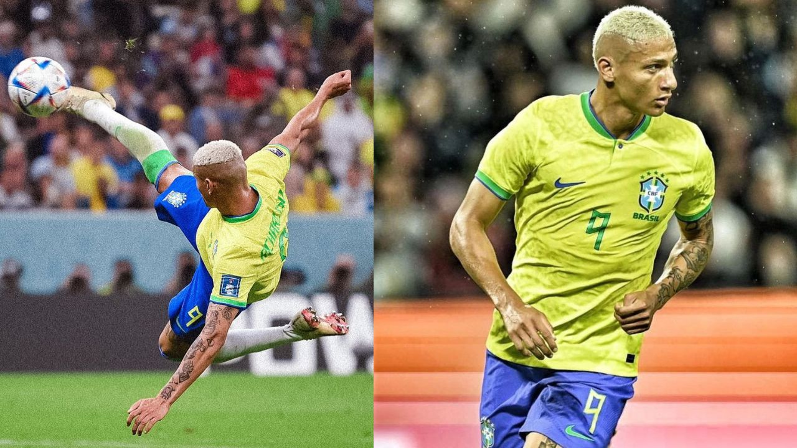

Blog de Artista
Por: Giovanna Camargo
Brasil assumi a liderança em seu ultimo logo apos richarlison chegar de ultima hora, fazendo 4 gols em seu ultimo jogo, veja mais em nosso canal de noticias
Veja as ultimas noticias do mundo em tempo real

Por: Giovanna Camargo
Brasil assumi a liderança em seu ultimo logo apos richarlison chegar de ultima hora, fazendo 4 gols em seu ultimo jogo, veja mais em nosso canal de noticias

Por: Giovanna Camargo
apos a sua suposta morte, oliver tree aparecer anunciando seu novo album, ao ser questionado por sua estrategia de marketing o cantor afirma "eu sei que passei um pouco do ponto porem qual e a graça de ser um artista se voce nao for incrivel?" veja mais em nosso site!